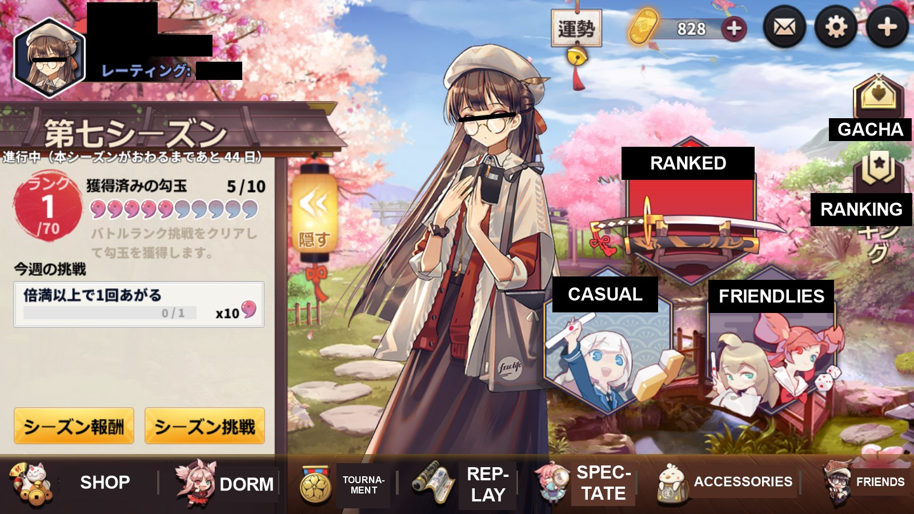
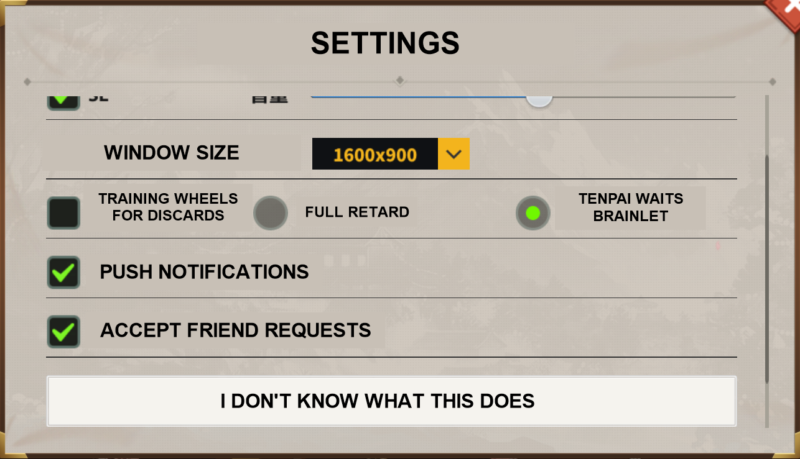

Hime Mahjong (雀姬/姫麻雀) is yet another gatcha mahjong client, on the same vein as mahjong soul. It doesn't have an English Translation (yet). Some say the hime devs employ less jewish methods than majsoul's horrible rates. Sadly, it doesn't have a browser version, only steam and android/iOS.
The interface is pretty straightforward, and if you're familiar with mahjong you'll can easily make your way through.
Interesting to note is that there's only one currency in Hime Mahjong, the gold coins. No copper/jade autism.
Official Website (with links to the android and ios downloads)
apk (QooApp)
Steam Page
MAHJONG HIME - a more in-dept guide about Hime Mahjong's interface. Just ignore the majsoul shilling and go straight to the pictures.
Shitty UI translation
and notes for the illiterate and interested - by a based himebro

The seasonal stuff on the left lasts every quarter. Think of it as the daily copper quests in MahjongSoul except slightly more annoying (requirements like chi X amount of times or riichi X amount of times are present but they're usually things like play X amount of ranked games). Every time you fill a 'battle link' with 10 of the battle shits you get free stuff. In addition to daily quests, you can get 15 battle balls by playing games in casual matches. However, casual matches only include tonpuusen and sanma.
A 10-roll can be purchased in the shop for 1000 of the gold shits in the upper right. You can get 150 of the gold shits if you fill out 32 of the battle links for the current season. You can get more gold shits as you achieve yaku and complete consecutive daily logins.
I'm sure you can figure out how to join and make rooms on your own
If you enter Ranked/Casual, the first button is for East Games, while the second is for South Games. From there you enter whatever room your rank allows you to.
Settings

The "I Don't Know What This Does" button is accordingly the Change to Horizontal Screen, maybe for phones.
Calls Settings (At the left side in-game)

Friendlies
How to make/Join Friendlies Room

Friendlies Settings

Rerolling Guide